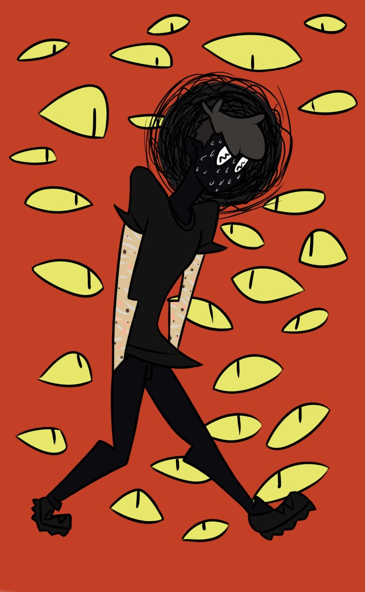

Persecutory Delusion

Persecutory delusion is a type of delusion where a person believes someone wants to harm them. A person with the delusion of persecution is convinced the other individual (or more people) threatens them, wants to kill them, or is spying on them.
Causes of persecutory delusion:
- Others mental health problem: If the person has other mental health problems, such as schizophrenia or bipolar disorder, they may be more likely to suffer persecutory delusion.
- Biological factors: The risk is increased by a family history of mental diseases like schizophrenia. Brain abnormalities include imbalances in neurotransmitters, especially dopamine, and anomalies in parts of the brain like the limbic system will also increase the chance of suffering persecutory delusion.
- Environmental factors: Vulnerability can be made worse by a lack of supportive relationships.
- Substance abuse: Using drugs or alcohol, particularly cannabis, can cause delusions.

Signs and Symptoms of Persecutory Delusion
- Being convinced that someone threatens or wants to do harm
- Becoming argumentative or violent when people question the delusion
- Reporting everything to authorities, and believing the authorities in question are involved as well
- Keeping on believing in paranoid theories even that no evidence confirms the allegation